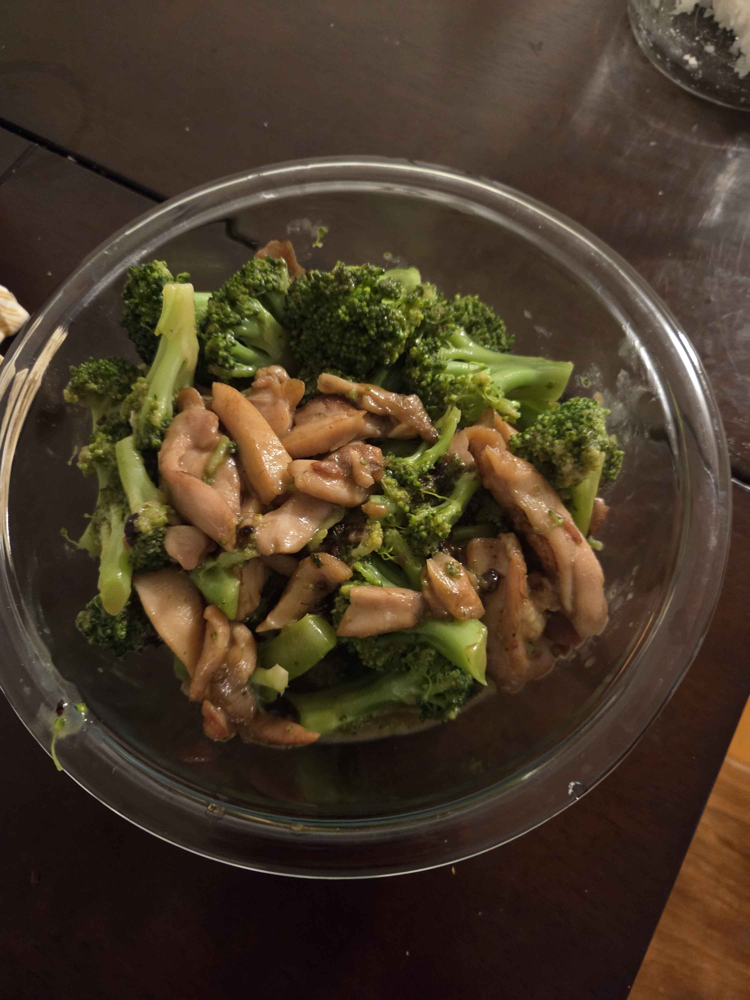

I'm a guy who loves sometimes taking a break from everything and having a nice homecooked lunch or going for a short walk. Most favorite Channel For Cooking

Major: CS major
Addicted to light novels and web novels chat to me about them. I have almost read every isekai novel (My friends say I have a problem).